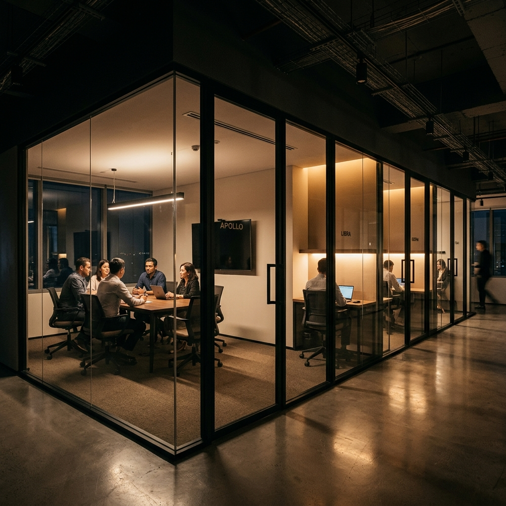

Glass partitions have become the standard for modern Bangalore workspaces, but selecting the wrong system can lead to acoustic issues, safety concerns, and budget overruns. Here is our expert guide to getting it right.

1. Acoustic Performance (STC Ratings)
In a bustling coworking space or a busy corporate office, privacy is paramount. Many designers focus on transparency but forget about sound. Look for STC (Sound Transmission Class) ratings. Single-glazed glass typically offers STC 30-35, while double-glazed systems can reach STC 45+.
2. Safety and Glass Type
Never compromise on safety. In commercial spaces, you should only use toughened (tempered) glass or laminated glass. Toughened glass is 4-5 times stronger than normal glass and, if it breaks, it shatters into small, blunt pieces rather than sharp shards.
3. Profile Thickness and Aesthetics
Do you want a "frameless" look or a bold "industrial" frame? Our slim profile systems offer the most transparency, while stile doors provide more durability for high-traffic areas. Consider the visible width of the aluminum sections—premium systems usually range between 25mm and 45mm.
4. Hardware Quality
A glass partition is only as good as its hardware. Hinges, floor springs, and handles are the moving parts that take the most wear and tear. Ensure your contractor uses aerospace-grade aluminum and high-quality hydraulic systems to prevent door sagging over time.
5. Site Measurement and Lead Times
In Bangalore's fast-paced commercial real estate market, timing is everything. Glass is custom-cut and cannot be altered once toughened. Ensure your execution partner performs precise laser measurements before ordering materials to avoid costly delays.
Ready to upgrade your workspace?
At Meaven Designs, we specialize in high-precision glass execution across Bangalore. Share your project scope with us for a transparent, fixed-price quote.
Get a Quote